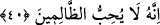

Zafer onun yolundan yularını, dizginini çevirir.
Şâyet zafer kazanırsa da ondan bir menfaat elde edemez,
Bir menfaat elde edilmeyen şey zafer olur mu?
40. Bir kötülüğün cezası, ona denk bir kötülüktür. Kim bağışlar ve barışı
sağlarsa, onun mükâfatı Allah’a âiddir. Doğrusu O, zalimleri sevmez.
“Bir kötülüğün cezâsı,” eğer kötülüğe mukabele edilecekse hiçbir fazlalık
olmaksızın, “ona denk bir kötülüktür.” Kendisine kötülük yapan kimseyi “kim
bağışlar”, suçunu affeder, kısası terk eder, kendisine haksızlık yapan kimseyi affederek
arayı düzeltir “barışı sağlarsa onun mükâfâtı Allah’a âiddir.” O mükâfat pek büyük
olacaktır. “Doğrusu O,” kötülüğü başlatan ve kısas intikâmında haddi aşan “zâlimleri
sevmez.”
“Bir kötülüğün cezâsı, ona denk bir kötülüktür” ifâdesi, her ne kadar intikam hadd-i
zâtında başkasına kötülük mânâsı taşısa da, yine de kısas ve intikam almanın güzel
hasletlerden olduğunu beyan etmektedir. Ayrıca şu husûsa da işâret edilmektedir:
Haksızlığı başlatan, kendisine uygulanacak kısas ve intikamın müsebbibidir. Zîrâ
yapılan işler, karşılıklarının müsebbipleridir. Şayed işler hayır olursa karşılığı da hayır
olur. Şayed işler şer olursa karşılığı da şer olur.
Bu kavl-i ilâhîde kısas ve intikamda haddi aşmanın haram olduğuna delil vardır.
Burada kötülüğe misliyle mukabele etmeye de “kötülük” denmiştir. Hâlbuki bu durum
meşrû ve me’zun bir durumdur. Dinen izin verilen bir şey ise güzeldir; çirkin değildir.
Kötülük denmesi ise uygulandığı kimseye kötü gelmesinden kaynaklanmaktadır. Yahut
“müşâkele” yoluyla bu şekilde ifâde edilmiştir. Yani buna kötülük denmesi sadece lâfzî
bir uyumdan ibarettir. Allah Teâlâ’nın “Eğer azab edecekseniz size yapılan azap
kadar azab edin” (en-Nahl, 16/126) buyurması da müşâkele kabilindendir. Buna göre
buradaki “kötülük” ifâdesi “iyilik”e mukabildir. Birinci yorumda ise durum böyle
değildir. Mânâ şöyledir: Şâyet kötülüğe mukabele edilecekse bunun hiçbir fazlalık
olmaksızın misliyle yapılması vâciptir.
Hasan Basrî şöyle demiştir: Biri sana, “Allah sana lânet etsin” yahut “Allah seni
rezil etsin” dese, sen de ona “Allah sana lânet etsin, seni rezil etsin” diyebilirsin. Yahut
biri sana söver yahut kötü sözler sarfederse, zinâ isnadı gibi had ve cezâyı gerektiren
yahut mukabele etmeye elverişli olmayan bir takım uygunsuz şeyler olmadığı sürece sen
de misliyle mukabele edebilirsin. Buna göre yalan ve iftirâda misliyle mukâbele
edilmez.
Tenvir’de şöyle denmiştir: Biri diğerine “Ey zâni” dese diğer kişide bu kişiye “Hayır